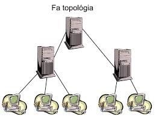

Méret
- lokális hálózat => LAN
- városi méretű hálózat => MAN
- nagy kiterjedésű hálózat => WAN
- hálózatba kapcsolt hálózatok (pl. internet)
A másodpercenként továbbított bitek számát jelenti. Wikipédia
Mitől függ?
Ebben az esetben a számítógépeket egy gráf csomópontjainak tekintjük, a számítógépeket összekötő kommunikációs csatornákat pedig a gráf éleinek.
Ha van kitüntetett szereppel bíró gép, akkor centralizált hálózatról beszélünk.
A legismertebb topológiák Wikipédia :

Licensed under the Creative Commons Attribution Share Alike License 4.0